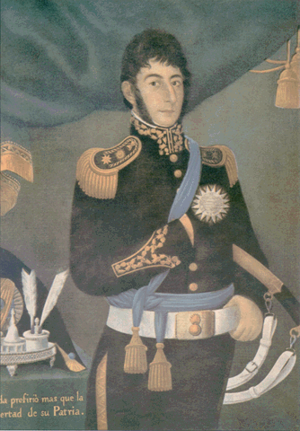

Salas
La imagen corresponde a un retrato histórico realizado por el pintor José Gil de Castro, una figura fundamental del arte sudamericano en la época de las independencias. La obra está realizada en óleo sobre tela y presenta a un importante líder militar de comienzos del siglo XIX, muy probablemente José de San Martín, uno de los principales protagonistas del proceso emancipador en América del Sur. Este tipo de retratos tenía una función mucho más profunda que la simple representación visual. En una época en la que no existía la fotografía, las pinturas eran el medio principal para difundir la imagen de los líderes políticos y militares. Por eso, estas obras buscaban transmitir autoridad, poder, disciplina y legitimidad. En este caso, el personaje aparece de pie, con una postura firme y segura, lo que refuerza la idea de liderazgo y control. El uniforme militar que viste está cuidadosamente detallado, con elementos dorados que indican jerarquía y rango. La banda celeste y blanca que cruza su pecho simboliza su pertenencia a las Provincias Unidas del Río de la Plata, antecedente de la actual Argentina. También se observan condecoraciones en su pecho, que representan sus logros y reconocimientos dentro del ámbito militar. El sable que sostiene es otro símbolo importante, ya que refuerza su papel como líder en combate y figura clave en las guerras de independencia. El estilo de José Gil de Castro se caracteriza por una representación sobria y formal, con figuras generalmente rígidas y frontales. El artista pone especial atención en los detalles del vestuario y los símbolos de poder, más que en el realismo del rostro o el movimiento. Esto responde a la intención de destacar la importancia social y política del retratado, más que su individualidad. Históricamente, la obra se sitúa en el contexto de las luchas por la Independencia de Argentina y otros procesos emancipadores en América Latina. Durante este período, líderes como San Martín llevaron adelante campañas militares decisivas, como el cruce de los Andes y la liberación de Chile y Perú. Estas acciones lo convirtieron en una figura central de la historia sudamericana, y por eso su imagen fue reproducida en numerosos retratos oficiales. En conjunto, la pintura no solo tiene valor artístico, sino también un gran valor histórico, ya que permite comprender cómo se construía la imagen de los héroes nacionales en una época de transformación política. A través de sus elementos visuales y simbólicos, la obra transmite ideales de patriotismo, sacrificio y autoridad que fueron fundamentales en la formación de las nuevas naciones independientes.
El retrato de José de San Martín en su ancianidad, vistiendo el uniforme de general, representa una etapa muy distinta de su vida, alejada de las campañas militares pero cargada de significado histórico y simbólico. Estas imágenes muestran a un hombre mayor, con el rostro más marcado por el paso del tiempo, cabello canoso y una expresión más serena, reflejando la experiencia y el desgaste de años de lucha. Después de sus campañas libertadoras en Sudamérica, San Martín se retiró progresivamente de la vida política y militar. Tras la entrevista con Simón Bolívar en 1822, decidió apartarse y finalmente se trasladó a Europa, donde vivió gran parte de su vejez, especialmente en Francia. A pesar de estar lejos de América, nunca dejó de ser reconocido como un héroe y figura clave en la independencia. En estos retratos de ancianidad, el hecho de que siga vistiendo su uniforme de general no es casual. El uniforme funciona como un símbolo de su identidad y de su legado. Aunque ya no participaba en batallas, su figura seguía asociada al Ejército de los Andes y a las victorias que habían permitido la independencia de varios países. La vestimenta militar, junto con las condecoraciones, reafirma su rol histórico y su autoridad, incluso en la vejez. A diferencia de los retratos de su juventud, donde aparece enérgico y con una postura rígida de mando, en estas representaciones se percibe mayor sobriedad y reflexión. Su mirada suele ser más tranquila, incluso melancólica, lo que muchos interpretan como el resultado del exilio, la distancia de su tierra y los conflictos políticos que vivió.
El retrato en la ancianidad de José de San Martín al que hacés referencia es un grabado realizado por Edmund Castan, con unas dimensiones de 21 × 17,5 cm. Este tipo de obra pertenece a una tradición distinta a los grandes óleos oficiales, ya que el grabado permitía reproducir la imagen en múltiples copias y difundirla con mayor facilidad. Durante el siglo XIX, los grabados fueron fundamentales para la circulación de imágenes de figuras históricas. A diferencia de una pintura única, estas obras podían imprimirse y llegar a un público más amplio, lo que contribuyó a consolidar la figura de San Martín como héroe en distintos espacios, tanto públicos como privados. Por eso, este formato más pequeño no implica menor importancia, sino una función diferente: la difusión y construcción de la memoria. En esta etapa de su vida, San Martín ya se encontraba retirado en Europa, viviendo en Francia, alejado de los conflictos políticos de América. Su imagen en la ancianidad comenzó a adquirir un carácter más simbólico, representando no solo al militar, sino al prócer que había cumplido su misión. Los grabados como el de Edmund Castan ayudaron a fijar esa imagen en el imaginario colectivo. El tamaño de 21 × 17,5 cm es característico de obras pensadas para circulación y colección. Podían ser conservadas en álbumes, enmarcadas en espacios domésticos o utilizadas en publicaciones. Este tipo de representación fue clave para mantener vigente la figura de José de San Martín incluso después de su muerte en 1850, contribuyendo a su reconocimiento como una de las principales figuras históricas de América del Sur.
El grabado de José de San Martín realizado por Francisco B. de Carcallo, con dimensiones de 74 × 56 cm, se inscribe dentro de la producción gráfica del siglo XIX destinada a difundir la imagen de los protagonistas de la independencia sudamericana. Durante ese período, el grabado cumplía un papel fundamental porque permitía reproducir retratos a partir de modelos originales, facilitando su circulación en distintos territorios. Obras de este tamaño, más amplias que los formatos domésticos, solían destinarse a espacios institucionales, ámbitos oficiales o colecciones importantes, donde contribuían a reforzar la presencia simbólica de los líderes revolucionarios. La imagen responde al momento en que San Martín era reconocido como una figura central del proceso independentista, especialmente por sus campañas en el sur del continente. Estas representaciones ayudaron a consolidar su figura dentro de la memoria colectiva, en un contexto donde las nuevas naciones necesitaban construir referentes y símbolos propios. El trabajo de Francisco B. de Carcallo forma parte de esa tradición visual que combinaba arte e historia, donde el objetivo no era solo retratar a una persona, sino también transmitir valores asociados a su figura, como el liderazgo, la disciplina y el compromiso con la causa independentista. El tamaño de 74 × 56 cm indica una obra pensada para tener presencia visual y relevancia dentro del espacio en el que se exhibía, diferenciándose de los grabados más pequeños destinados a uso personal. Estas piezas fueron fundamentales para fijar una imagen duradera de José de San Martín en la cultura histórica de América del Sur.
La obra corresponde a una pieza de gran formato, con una altura de 118 cm, realizada en porcelana azul cobalto y presentada enmarcada, lo que refuerza su carácter decorativo y su importancia dentro de un espacio expositivo. El uso del azul cobalto, un pigmento tradicionalmente asociado a la cerámica de alta calidad, aporta profundidad visual y elegancia, además de remitir a una larga tradición artística vinculada a objetos de prestigio. La composición fue realizada a partir de una escena de batalla, lo que indica que no se trata de un motivo puramente ornamental, sino de una representación con contenido histórico o narrativo. Este tipo de escenas solía inspirarse en episodios militares significativos, donde se buscaba destacar momentos de acción, heroísmo o liderazgo. La adaptación de una escena de batalla a una superficie de porcelana implica un trabajo detallado, en el que las figuras, los movimientos y el entorno deben ser cuidadosamente trasladados al soporte cerámico. El hecho de que la pieza esté firmada por Lucot le otorga un valor adicional, ya que permite identificar su autoría y vincularla con una tradición específica dentro de la producción artística. La firma en este tipo de obras no solo cumple una función de autenticidad, sino también de reconocimiento del trabajo del artista. El enmarcado sugiere que la pieza fue concebida para exhibición, posiblemente en un ámbito formal como una sala, galería o institución. Este recurso no solo protege la obra, sino que también la integra visualmente como si fuera una pintura, reforzando su carácter artístico más allá de lo decorativo. En conjunto, se trata de una obra compleja que combina arte decorativo y representación histórica, donde el material, el color, el tamaño y la temática contribuyen a crear una pieza de fuerte presencia visual y significado simbólico.
El jarrón de Sèvres, con una altura de 118 cm, es una pieza de gran tamaño y fuerte presencia decorativa, realizada en porcelana azul cobalto, un material y color característicos de la producción de alta calidad asociada a esta tradición. Este tipo de objetos no estaba destinado al uso cotidiano, sino a la ornamentación de espacios importantes, donde cumplía una función estética y representativa. La pieza presenta una decoración basada en una escena de batalla, lo que le aporta un contenido histórico además de su valor ornamental. Estas escenas eran frecuentes en objetos de lujo, ya que permitían combinar el refinamiento del material con la representación de hechos o ideales vinculados al heroísmo y la historia. Se encuentra enmarcada, lo que indica que fue concebida para exhibición, integrándose visualmente como una obra artística más cercana a la pintura que a un objeto utilitario. Este recurso refuerza su carácter decorativo y su importancia dentro del espacio donde se ubicaba. El jarrón está marcado por Azaretto Hnos, una firma de objetos decorativos activa hasta la década de 1930. Este dato es relevante, ya que permite situar la pieza dentro de un circuito comercial y artístico en Argentina. Esta empresa se dedicaba a la importación y provisión de elementos decorativos de calidad, y tuvo participación en el equipamiento de espacios institucionales, incluyendo la provisión de arañas (lámparas de gran tamaño) para el regimiento. La presencia de esta marca sugiere que el jarrón pudo haber sido importado o comercializado en Buenos Aires, integrándose luego en ámbitos oficiales o residenciales de cierto nivel. En conjunto, se trata de una obra que combina tradición europea, circulación local y valor histórico-decorativo, destacándose tanto por su material como por su escala y su procedencia.
La réplica de la espada de José de San Martín conocida como “espada de Bailén” hace referencia al sable que el prócer utilizó durante su etapa como oficial en el ejército español, antes de regresar a América para participar en las guerras de independencia. El nombre proviene de la Batalla de Bailén, un enfrentamiento clave de la Guerra de la Independencia Española contra las tropas napoleónicas. En esa batalla, que significó una de las primeras derrotas importantes del ejército de Napoleón, San Martín participó como parte de las fuerzas españolas, destacándose en combate. Como reconocimiento a su actuación, recibió distinciones y consolidó su carrera militar en Europa. La espada asociada a ese período se convirtió con el tiempo en un símbolo de su formación militar inicial. Años más tarde, cuando se incorporó a la lucha por la independencia en el Río de la Plata, su experiencia adquirida en Europa fue fundamental para la organización del ejército y la planificación de campañas como el cruce de los Andes. Las réplicas de la espada de Bailén tienen un valor principalmente simbólico y conmemorativo. Suelen reproducir las características del arma original: un sable de estilo europeo de comienzos del siglo XIX, con hoja curva, empuñadura trabajada y detalles ornamentales propios de un oficial. Estas réplicas se exhiben en museos, instituciones militares y espacios históricos, donde cumplen la función de mantener viva la memoria del prócer y de su trayectoria tanto en Europa como en América. En Argentina, este tipo de objetos forma parte del patrimonio histórico y está vinculado a la construcción de la identidad nacional, ya que recuerda no solo al San Martín libertador, sino también al militar formado en los ejércitos europeos que luego aplicó ese conocimiento en las campañas independentistas.
